糖是甜味可溶性碳水化合物的统称，其中许多都用于食品中。单糖，也称为单糖，包括葡萄糖、果糖和半乳糖。复合糖，也称为二糖或双糖，是由两个单糖分子结合而成的分子；常见的例子有蔗糖（葡萄糖 + 果糖）、乳糖（葡萄糖 + 半乳糖）和麦芽糖（两个葡萄糖分子）。白糖几乎是纯蔗糖。在体内，复合糖会水解成单糖。
较长的单糖链（>2）不被视为糖，而被称为寡糖或多糖。淀粉是存在于植物中的葡萄糖聚合物，而植物是人类食物中最丰富的能量来源。其他一些化学物质，例如乙二醇、甘油和糖醇，可能有甜味，但不属于糖。
糖存在于大多数植物的组织中。蜂蜜和水果是单糖的丰富天然来源。蔗糖尤其集中在甘蔗和甜菜中，这使其成为高效商业提取以制造精制糖的理想选择。2016 年，这两种作物的全球总产量约为 20 亿吨。麦芽糖可以通过麦芽谷物生产。乳糖是唯一不能从植物中提取的糖。它只能在牛奶（包括人类母乳）和一些乳制品中找到。玉米糖浆是一种廉价的糖来源，工业上是通过将玉米淀粉转化为糖（例如麦芽糖、果糖和葡萄糖）而生产的。
蔗糖用于预制食品（例如饼干和蛋糕），有时也添加到市售的超加工食品和饮料中，有时也用作食品（例如吐司和麦片）和饮料（例如咖啡和茶）的甜味剂。全球平均每人每年消耗约 24 公斤（53 磅）的糖。北美和南美人平均每年消耗高达 50 公斤（110 磅），而非洲人平均每年消耗不到 20 公斤（44 磅）。[ 1 ]
随着20世纪后期游离糖消费量的增加，研究人员开始研究高游离糖（尤其是精制糖）饮食是否会损害人体健康。2015年，世界卫生组织强烈建议成人和儿童将游离糖摄入量减少到总能量摄入量的10%以下，并鼓励将其降至5%以下。[ 2 ]总体而言，高糖摄入对人体健康的损害大于其提供的营养价值，并且可能带来心脏代谢和其他健康损害的风险。[ 3 ]
词源
编辑糖的词源反映了这种商品的传播。波斯语shakar和阿拉伯语sukkar均源自梵语śarkarā（意为“磨碎的糖或蜜饯糖”）。阿拉伯语 sukkar 一词借用自中世纪拉丁语succarum，12 世纪法语sucre和英语sugar均由此而来。糖是由西西里岛和西班牙的阿拉伯人引入欧洲的。[ 4 ]
英语单词jaggery是指用枣椰树汁或甘蔗汁制成的粗红糖，其词源与 jaggery 相似：葡萄牙语jágara源自马拉雅拉姆语cakkarā，而 cakkarā 又源于梵语śarkarā。[ 5 ]
历史
编辑古代世界到文艺复兴
编辑 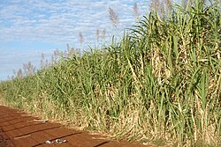
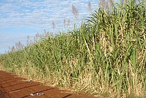
亚洲
编辑印度次大陆[ 6 ]已生产糖数千年。甘蔗种植从那里经开伯尔山口和商队路线传入中国。[ 7 ]早期，甘蔗既不丰富也不便宜，在世界大多数地区，人们更常使用蜂蜜来提甜。 [ 8 ]最初，人们咀嚼生甘蔗来获取甜味。即使在欧洲殖民时代精制甘蔗变得更加普及之后，[ 9 ] 棕榈糖在爪哇和东南亚其他产糖地区仍然广受欢迎，如今，棕榈糖和椰子糖仍在当地用于制作甜点。[ 10 ] [ 11 ]
甘蔗原产于印度次大陆（南亚）和东南亚等热带地区。[ 6 ] [ 12 ]不同品种似乎起源于不同的地方；Saccharum barberi起源于印度，S. edule和S. officinarum来自新几内亚。[ 12 ] [ 13 ]最早的历史记载之一是公元前 8 世纪的中国手稿，其中指出甘蔗的使用起源于印度。[ 14 ]
在印度医学（ āyurveda ）传统中，甘蔗被称为“ Ikṣu”，甘蔗汁被称为“Phāṇita” 。其种类、同义词及特性在《药典》 （Bhāvaprakāśa，1.6.23，甘蔗组）等著作中均有定义。 [ 15 ]
直到公元350年左右，糖才逐渐被人们所重视。当时，印度人发现了将甘蔗汁制成颗粒状晶体的方法，以便于储存和运输。糖被认为是一种“甜香料”，印度商人开始在印度境外进行糖的贸易。[ 16 ]希腊医生佩达尼乌斯·迪奥斯科里德斯在其公元1世纪的医学论文《药物论》中证实了这种方法：
在印度和阿拉伯的芦苇中发现一种名为 sakcharon（即糖）的凝聚蜂蜜，其稠度与盐相似，并且像盐一样易碎，可以在牙齿之间折断，
在印度当地语言中，这些晶体被称为khanda (天城文：खण्ड, Khaṇḍa )，这也是“糖果”一词的来源。[ 19 ]印度水手携带着澄清的黄油和糖作为补给，沿着他们航行的各条贸易路线传入了糖的知识。[ 20 ]旅行的佛教僧侣将糖结晶的方法带到了中国。[ 21 ]北印度戒日王（公元 606-647 年在位）统治期间，在唐太宗（公元 626-649 年在位）表示对糖感兴趣后，印度使节在中国唐朝传授了种植甘蔗的方法。中国在 7 世纪建立了第一个甘蔗种植园。 [ 22 ]中国文献证实，至少有两次使团前往印度，始于公元 647 年，以获取糖精炼技术。[ 23 ]
欧洲
编辑 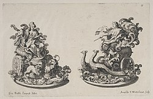
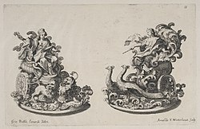
亚历山大大帝的海军上将尼尔库斯在公元前 325 年参加了亚历山大率领的印度战役（阿里安，远征记），从而了解了糖。[ 24 ] [ 25 ]除了希腊医生佩达尼乌斯·迪奥斯科里德斯之外，罗马人老普林尼也在其公元 1 世纪的《自然史》中描述了糖：“阿拉伯也生产糖，但印度糖更好。它是一种从甘蔗中发现的蜂蜜，像树胶一样白，在牙齿间嘎吱作响。它是榛子大小的块状。糖只用于医疗目的。 ” [ 26 ] 十字军在圣地征战后将糖带回欧洲，在那里他们遇到了运送“甜盐”的大篷车。12 世纪初，威尼斯共和国在提尔附近获得了一些村庄，并建立庄园生产糖并出口到欧洲。它补充了蜂蜜的使用，而蜂蜜此前是唯一可用的甜味剂。[ 27 ]十字军编年史家泰尔的威廉在 12 世纪后期写道，糖“对人类的使用和健康非常必要”。[ 28 ]在 15 世纪，威尼斯是欧洲主要的糖精炼和分销中心。[ 14 ]
15 世纪中叶，欧洲人定居于马德拉群岛和加那利群岛，糖也随之传入，这里发生了翻天覆地的变化。 [ 29 ] [ 30 ]此后，尽管糖最初仍然非常昂贵，但随着糖的获取变得容易得多，“对糖的狂热……席卷了整个社会”。[ 31 ]到 1492 年，马德拉群岛每年的糖产量超过 1,400,000 公斤（3,000,000 磅）。[ 32 ] 热那亚是糖的分销中心之一，以蜜饯水果而闻名，而威尼斯则专营糕点、糖果和糖雕。在当时的分类中，糖被认为是一种“温热”食物，具有“宝贵的药用价值”，“有益于胃部健康，治疗感冒疾病，舒缓肺部疾病”。[ 33 ]
1457 年，加斯通·德·富瓦 (Gaston de Foix)在图尔举办的一场宴会“可能是我们所知道的关于中世纪晚期宴会的最好、最完整的记录”，其中首次提到了糖雕，因为最后端上来的食物是“用糖雕成的纹章动物园：狮子、牡鹿、猴子……每只都用爪子或喙握着匈牙利国王的纹章”。[ 34 ]此后几十年记录的其他盛大宴会也包含类似的作品。[ 35 ]起初，这些雕塑似乎在用餐时被食用，但后来它们仅仅成为餐桌装饰，最精致的被称为trionfi。已知有几位重要的雕塑家制作过它们；在某些情况下，它们的初步图纸幸存了下来。早期的糖雕是用红糖制成的，部分在模具中浇铸而成，最后的润色是雕刻而成的。它们一直使用到至少1903 年英国国王爱德华七世的加冕宴会；除了其他雕塑之外，每位客人还获赠一顶糖王冠带走。[ 36 ]
现代史
编辑 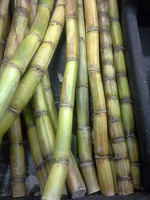
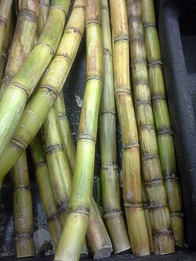
1492 年 8 月，克里斯托弗·哥伦布在加那利群岛的戈梅拉岛采集了甘蔗样本，并将其引入新大陆。[ 37 ]种植了插穗，并于 1501 年在伊斯帕尼奥拉岛首次收获甘蔗。到 16 世纪 20 年代，古巴和牙买加已经建造了许多糖厂。 [ 38 ]葡萄牙人将甘蔗带到了巴西。到 1540 年，圣卡塔琳娜岛有 800 家甘蔗厂，巴西北部海岸、德马拉拉和苏里南有 2,000 家。直到 1600 年，巴西的糖产量才超过圣多美，后者是 16 世纪的主要糖产中心。[ 30 ]
 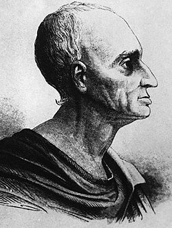
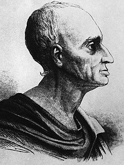 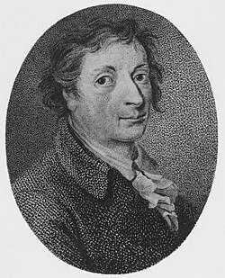
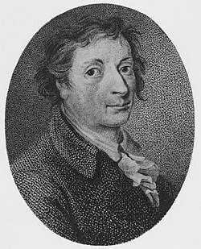到了 17 世纪 80 年代，英国的糖零售价已降至每磅约 10 便士，商人可以买得起糖果。糖产量增加导致整个欧洲的零售价格下降。[ 39 ]然而，直到 19 世纪初，糖在欧洲仍然是一种奢侈品，后来由于普鲁士甜菜糖的兴起，糖才变得更加普遍，后来在拿破仑统治下的法国也出现了甜菜糖。 [ 40 ]甜菜糖是德国的发明，因为在 1747 年，安德烈亚斯·西吉斯蒙德·马格拉夫宣布在甜菜中发现糖，并设计出一种用酒精提取糖的方法。[ 41 ]马格拉夫的学生弗朗茨·卡尔·阿查德在 18 世纪后期设计出一种经济的工业方法来提取纯糖。[ 42 ] [ 43 ]阿查德于1783年在考尔斯多夫首次生产甜菜糖，1801年，世界上第一家甜菜糖生产设施在西里西亚的库内恩（当时属于普鲁士，今波兰）建立。[ 44 ]玛格拉夫和阿查德的工厂是欧洲制糖业的起点，[ 45 ]也是现代制糖业的起点，因为糖不再是奢侈品，也不再几乎只在温暖的气候下生产。[ 46 ]
糖变得非常流行，到了 19 世纪，家家户户都能找到糖。糖作为一种基本食品成分，其口味和需求的演变导致了重大的经济和社会变革。[ 47 ]这种需求在一定程度上推动了人们对热带岛屿以及劳动密集型甘蔗种植园和制糖厂能够成功发展的地区的殖民化。[ 47 ]从 1850 年到 2000 年，全球糖消费量增长了 100 多倍，其中英国的消费量最高，从 1650 年的每人每年约 2 磅增加到 20 世纪初的 90 磅。18 世纪末，英国消费了运往欧洲的糖的约一半。[ 48 ]
奴隶制废除后，来自印度次大陆的契约劳工满足了欧洲在加勒比地区殖民地对工人的需求。[ 49 ] [ 50 ] [ 51 ]数百万被奴役或契约劳工被带到美洲、非洲和亚洲的各个欧洲殖民地（这是由于欧洲对糖等商品的需求），影响了全球众多国家的种族融合。[ 52 ] [ 53 ] [ 54 ]
制糖也促进了甘蔗种植区的工业化发展。例如，18 世纪 90 年代，孟加拉管辖区的中尉 J. 帕特森向英国议会提倡这样一种观点，即甘蔗可以在其发源地英属印度种植，而且比在西印度群岛种植具有许多优势，成本也更低。结果，印度东部的比哈尔邦建立了制糖厂。 [ 55 ] [ 56 ]拿破仑战争期间，由于航运封锁导致进口糖困难，欧洲大陆的甜菜产量增加。到 1880 年，甜菜成为欧洲的主要糖来源。林肯郡和英格兰其他地区也有种植甜菜，但英国的主要糖来源仍是从其殖民地进口。[ 57 ]
直到十九世纪末，人们都是以块状购买糖，需要用一种叫做糖钳的工具来切割。[ 58 ]后来，砂糖通常以袋装出售。方糖是在十九世纪生产的。第一个发明方糖生产工艺的人是雅各布·克里斯托夫·拉德，他是达奇采一家糖厂的厂长。1841 年，他生产出了世界上第一块方糖。[ 59 ] 1843 年 1 月 23 日，他获得了为期五年的方糖生产专利，随后开始生产方糖。泰特莱尔公司的亨利·泰特是另一位早期在利物浦和伦敦的炼油厂生产方糖的制造商。泰特从德国人尤金·兰根手中购买了方糖制造专利，而尤金·兰根在 1872 年发明了一种不同的方糖加工方法。[ 60 ]
第一次世界大战期间，糖是实行定量配给的，尽管有人说“历史上没有哪场战争，消耗的糖分这么大，而消耗的酒精这么少”，[ 61 ]第二次世界大战期间的定量配给更为严重。[ 62 ] [ 63 ] [ 64 ] [ 65 ] [ 66 ]定量配给导致了各种人工甜味剂的开发和使用。[ 62 ] [ 67 ]
化学
编辑 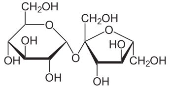
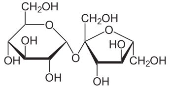
从科学角度来看，糖大致指多种碳水化合物，例如单糖、二糖或寡糖。单糖也称为“简单糖”，其中最重要的是葡萄糖。大多数单糖的分子式符合C
n哈
2n哦
nn在3到7之间（脱氧核糖除外）。葡萄糖的分子式 为C
6哈
12哦
6典型糖的名称以“-ose ”结尾，例如“葡萄糖”和“果糖”。有时，这些词也指任何可溶于水的碳水化合物。无环单糖和双糖含有醛基或酮基。这些碳氧双键（C=O）是反应中心。所有结构中含有多个环的糖都是由两个或多个单糖通过糖苷键连接而成，并由此失去一个水分子（H
2O）每键。[ 68 ]
闭链形式的单糖可以与其他单糖形成糖苷键，形成二糖（如蔗糖）和多糖（如淀粉或纤维素）。这些化合物必须先经过酶的水解或以其他方式破坏这些糖苷键，才能被代谢。消化和吸收后，血液和内脏组织中的主要单糖包括葡萄糖、果糖和半乳糖。许多戊糖和己糖可以形成环状结构。在这些闭链形式中，醛或酮基团保持非游离状态，因此这些基团的许多典型反应无法发生。在平衡状态下，溶液中的葡萄糖大多以环状形式存在，只有不到 0.1% 的分子以开链形式存在。[ 68 ]
天然聚合物
编辑糖的生物聚合物在自然界中很常见。植物通过光合作用产生3-磷酸甘油醛（G3P），这是一种磷酸化的3碳糖，细胞利用它生成单糖，例如葡萄糖（C
6哈
12哦
6)或（如甘蔗和甜菜）蔗糖（C
12哈
22哦
11单糖可以进一步转化为结构多糖，如纤维素和果胶，用于构建细胞壁，或转化为储存多糖（如淀粉或菊粉）的能量储备。淀粉由两种不同的葡萄糖聚合物组成，是一种易于降解的化学能形式，被细胞储存，并可转化为其他类型的能量。[ 68 ]葡萄糖的另一种聚合物是纤维素，它是由几百或几千个葡萄糖单元组成的直链。植物使用它作为细胞壁的结构成分。人类只能在非常有限的程度上消化纤维素，但反刍动物可以在肠道共生细菌的帮助下做到这一点。 [ 69 ] DNA和RNA分别由单糖脱氧核糖和核糖组成。脱氧核糖的分子式为C
5哈
10哦
4核糖的分子式为C
5哈
10哦
5. [ 70 ]
可燃性和热响应
编辑 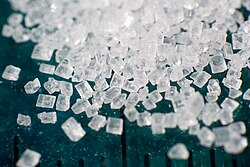
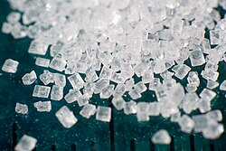
由于糖在明火中易燃，因此处理糖时存在发生粉尘爆炸的风险。当糖被磨成超细颗粒时，例如用于制作口香糖，爆炸风险会更高。[ 71 ] 2008年，佐治亚州糖厂爆炸事件就是由糖粉燃烧引起的，造成14人死亡，36人受伤，炼油厂大部分建筑被毁。[ 72 ]
在烹饪中，糖受热后会发生焦糖化。在这一过程中，诸如双乙酰之类的挥发性化学物质会被释放，从而产生焦糖特有的风味。[ 73 ]
类型
编辑单糖
编辑果糖、半乳糖和葡萄糖都是单糖，通式为C 6 H 12 O 6。它们含有五个羟基（−OH）和一个羰基（C=O），溶于水时呈环状。它们各自存在几种同分异构体，包括右旋和左旋两种形式，导致偏振光向右或向左发散。[ 74 ]
- 果糖，又称水果糖，天然存在于水果、一些根茎类蔬菜、蔗糖和蜂蜜中，是所有糖类中最甜的。它是蔗糖或食糖的成分之一。它被用作高果糖浆，由玉米淀粉水解后加工成玉米糖浆，然后加入酶将部分葡萄糖转化为果糖制成。 [ 75 ]
- 半乳糖通常不以游离状态存在，而是与葡萄糖一起构成双糖乳糖或乳糖的组成部分。它的甜度低于葡萄糖。它是红细胞表面决定血型的抗原的组成部分。 [ 76 ]
- 葡萄糖天然存在于水果和植物汁中，是光合作用的主要产物。淀粉在消化过程中转化为葡萄糖，葡萄糖是通过血液在动物体内运输的糖的形式。虽然原则上葡萄糖有两种对映体（彼此互为镜像），但天然存在的葡萄糖是 D-葡萄糖。这也被称为右旋糖或葡萄糖，因为干燥葡萄汁会产生右旋糖晶体，可以从其他成分中筛选出来。 [ 77 ]葡萄糖浆是葡萄糖的液体形式，广泛用于食品制造。它可以通过酶水解由淀粉制成。 [ 78 ]例如，通过分解玉米淀粉进行商业生产的玉米糖浆是纯化右旋糖的常见来源之一。 [ 79 ]然而，右旋糖天然存在于许多未经加工的全食物中，包括蜂蜜和葡萄等水果。 [ 80 ]
双糖
编辑乳糖、麦芽糖和蔗糖都是复合糖，即二糖，通式为 C12H22O11 。它们是由两个单糖分子结合而成，并排除一个水分子。[ 74 ]
- 乳糖是牛奶中天然存在的糖。一个乳糖分子是由一个半乳糖分子和一个葡萄糖分子结合而成。乳糖在消化过程中会被乳糖酶分解成其组成部分。儿童体内有这种酶，但有些成年人体内不再有这种酶，因此无法消化乳糖。 [ 81 ]
- 麦芽糖是某些谷物发芽过程中产生的，其中最显著的是大麦，它会转化为麦芽，麦芽糖的名字由此而来。一个麦芽糖分子由两个葡萄糖分子结合而成。它的甜度低于葡萄糖、果糖或蔗糖。 [ 74 ]它在体内由淀粉酶消化淀粉时形成，并在消化过程中被麦芽糖酶分解。 [ 82 ]
- 蔗糖存在于甘蔗茎和甜菜根中。它也与果糖和葡萄糖一起天然存在于其他植物中，尤其是水果和一些根茎植物，例如胡萝卜。这些食物中糖的含量不同，决定了食用时体验到的甜度范围。 [ 74 ]蔗糖分子是由葡萄糖分子与果糖分子结合形成的。食用后，蔗糖在消化过程中会被多种被称为蔗糖酶的酶分解成其组成部分。 [ 83 ]
来源
编辑常见水果和蔬菜的糖含量见表1。
| 食品 | 总 碳水化合物A （包括 膳食纤维） |
总 糖 |
游离 果糖 |
游离 葡萄糖 |
蔗糖 | 果糖/ （果糖+葡萄糖） 比率B |
蔗糖
占总糖 的百分比 |
|---|---|---|---|---|---|---|---|
| 水果 | |||||||
| 苹果 | 13.8 | 10.4 | 5.9 | 2.4 | 2.1 | 0.67 | 20 |
| 杏 | 11.1 | 9.2 | 0.9 | 2.4 | 5.9 | 0.42 | 64 |
| 香蕉 | 22.8 | 12.2 | 4.9 | 5.0 | 2.4 | 0.5 | 20 |
| 无花果干 | 63.9 | 47.9 | 22.9 | 24.8 | 0.9 | 0.48 | 1.9 |
| 葡萄 | 18.1 | 15.5 | 8.1 | 7.2 | 0.2 | 0.53 | 1 |
| 脐橙 | 12.5 | 8.5 | 2.25 | 2.0 | 4.3 | 0.51 | 51 |
| 桃 | 9.5 | 8.4 | 1.5 | 2.0 | 4.8 | 0.47 | 57 |
| 梨 | 15.5 | 9.8 | 6.2 | 2.8 | 0.8 | 0.67 | 8 |
| 菠萝 | 13.1 | 9.9 | 2.1 | 1.7 | 6.0 | 0.52 | 61 |
| 李子 | 11.4 | 9.9 | 3.1 | 5.1 | 1.6 | 0.40 | 16 |
| 草莓 | 7.68 | 4.89 | 2.441 | 1.99 | 0.47 | 0.55 | 10 |
| 蔬菜 | |||||||
| 红甜菜 | 9.6 | 6.8 | 0.1 | 0.1 | 6.5 | 0.50 | 96 |
| 胡萝卜 | 9.6 | 4.7 | 0.6 | 0.6 | 3.6 | 0.50 | 77 |
| 玉米，甜的 | 19.0 | 6.2 | 1.9 | 3.4 | 0.9 | 0.38 | 15 |
| 红辣椒，甜 | 6.0 | 4.2 | 2.3 | 1.9 | 0.0 | 0.55 | 0 |
| 洋葱，甜的 | 7.6 | 5.0 | 2.0 | 2.3 | 0.7 | 0.47 | 14 |
| 甘薯 | 20.1 | 4.2 | 0.7 | 1.0 | 2.5 | 0.47 | 60 |
| 薯 | 27.9 | 0.5 | tr | tr | tr | 娜 | tr |
| 甘蔗 | 13–18 | 0.2–1.0 | 0.2–1.0 | 11–16 | 0.50 | 高的 | |
| 甜菜 | 17–18 | 0.1–0.5 | 0.1–0.5 | 16–17 | 0.50 | 高的 |
生产
编辑由于需求不断增长，2009 年至 2018 年期间，糖产量总体增长了约 14%。[ 85 ]最大的进口国是中国、印度尼西亚和美国。[ 85 ]
糖
编辑拉古斯表示，2022-2023 年世界糖产量为 1.86 亿吨，2023-2024 年预计产量为 1.94 亿吨，过剩 500 万吨。[ 86 ]
蔗
编辑| 2022年甘蔗产量 | |
|---|---|
| 国家 | 百万吨 |
|
|
724.4 |
|
|
439.4 |
|
|
103.4 |
|
|
92.1 |
| 世界 | 1,922.1 |
| 来源：粮农组织[ 87 ] | |
2000年至2021年间，甘蔗约占全球农作物产量的21%。美洲是甘蔗产量最大的地区（占世界总产量的52%）。[ 88 ] 2022年全球甘蔗产量为19亿吨，其中巴西占38%，印度占23%（见表）。
甘蔗是禾本科甘蔗属的几种巨型禾本科植物或其杂交种。几个世纪以来，人们一直在印度次大陆和东南亚的热带气候地区种植甘蔗，以获取其茎中含有的蔗糖。[ 6 ]
 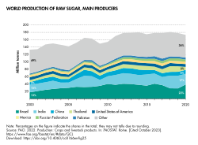
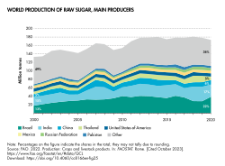
甘蔗生长季节需要无霜气候和充足的降雨，以充分利用植物的巨大生长潜力。作物可用机械或手工收割，切成一定长度，然后迅速运送到加工厂（通常称为糖厂），在那里进行研磨，用水提取汁液，或通过渗透提取。[ 90 ]用石灰澄清汁液，并加热以破坏酶。将得到的稀糖浆在一系列蒸发器中浓缩，然后再除去水分。在得到的过饱和溶液中加入糖晶体，促进晶体形成和干燥。[ 90 ] 糖蜜是该过程的副产品，茎中的纤维称为甘蔗渣，[ 90 ]被燃烧以为糖提取过程提供能量。原糖晶体表面有一层粘稠的棕色涂层，可以直接使用，也可以用二氧化硫漂白，或者经过碳化工艺处理，以生产出更白的产品。[ 90 ]每生产 1 公斤（2.2 磅）糖，大约需要 2500 升（660 美制加仑）的灌溉水。[ 91 ]
甜菜
编辑| 2022年甜菜产量 | |
|---|---|
| 国家 | 百万吨 |
|
|
48.9 |
|
|
31.5 |
|
|
29.6 |
|
|
28.2 |
| 世界 | 260 |
| 来源：粮农组织[ 87 ] | |
2022年，全球甜菜产量为2.6亿吨，其中俄罗斯产量最高，占世界总产量的18.8%（表格）。
19 世纪，随着提取糖分的方法的出现，甜菜成为糖的主要来源。甜菜是一种二年生植物[ 92 ]，是苋科甜菜属的栽培品种，其块根含有大量的蔗糖。甜菜在降雨充足的温带地区作为块根作物种植，需要肥沃的土壤。秋季机械收割甜菜，去除叶冠和多余的土壤。甜菜根部不会迅速腐烂，可以在田间放置数周，然后再运送到加工厂。在加工厂，甜菜经过清洗和切片，通过渗透提取糖分。[ 93 ]将石灰乳和碳酸钙一起加入原汁中。在真空条件下煮沸糖浆以蒸发水分，然后冷却糖浆，并在糖浆中加入糖晶体。结晶的白糖可以用离心机分离并干燥，无需进一步精炼。[ 93 ]
精制
编辑精制糖是由原糖经过精炼工艺去除糖蜜制成的。[ 94 ] [ 95 ]原糖是从甘蔗或甜菜中提取的蔗糖。原糖可以食用，但精炼过程会去除不想要的味道，最终得到精制糖或白糖。[ 96 ] [ 97 ]
糖可以批量运输到使用国，精炼过程通常在那里进行。第一阶段称为亲和，包括将糖晶体浸入浓缩糖浆中，糖浆会软化并去除粘稠的棕色涂层，但不会溶解它们。然后将晶体从溶液中分离出来并溶解在水中。得到的糖浆通过碳酸盐化或磷酸盐化工艺进行处理。这两种工艺都会导致糖浆中沉淀出细小的固体，当这些固体被过滤掉时，许多杂质也会同时被去除。去除颜色可以使用颗粒活性炭或离子交换树脂来实现。糖浆通过煮沸浓缩，然后冷却并加入糖晶体进行晶种，使糖结晶出来。将溶液放入离心机中旋转，白色晶体在热空气中干燥，即可包装或使用。剩余的溶液被制成精炼糖蜜。[ 98 ]
国际统一糖分析方法委员会制定了测量精制糖纯度的标准，称为 ICUMSA 数值；数值越低，表示精制糖的纯度越高。[ 99 ]
精制糖广泛应用于工业领域，以满足对更高品质的需求。精制糖的纯度（ICUMSA 值低于 300）高于原糖（ICUMSA 值高于 1500）。[ 100 ]糖的纯度等级与颜色相关，以标准值ICUMSA表示。ICUMSA 值越小，糖的纯度越高。[ 100 ]
形式和用途
编辑晶体尺寸
编辑 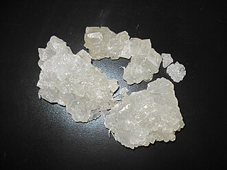
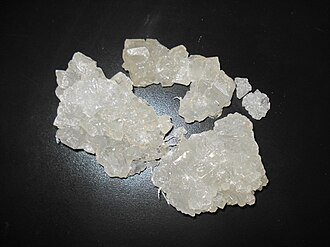 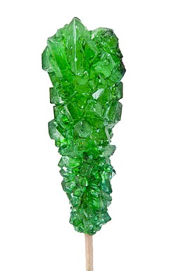
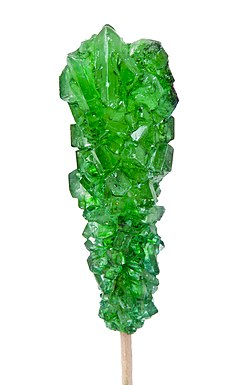- 粗粒糖，又称砂糖，由反光晶体组成，颗粒大小约为1至3毫米，类似于食盐。用于烘焙食品和糖果上，即使受热受潮也不会溶解。[ 101 ]
- 砂糖（晶体直径约0.6毫米），也称为食用糖或普通糖，在餐桌上用于撒在食物上，或用于给热饮（咖啡和茶）增甜，在家庭烘焙中用于增加烘焙食品（饼干和蛋糕）和甜点（布丁和冰淇淋）的甜度和口感。砂糖也可用作防腐剂，防止微生物滋生和易腐食品变质，例如用于蜜饯、果酱和柑橘酱。[ 102 ]
- 糖粉（糖霜）等研磨糖被磨成细粉。它们可用于撒在食物上，以及用于烘焙和糖果制作。[ 103 ] [ 101 ]
- 筛分糖，例如细砂糖，是根据颗粒大小筛选出来的结晶产品。它们可用于装饰性食用糖、混合干粉以及用于烘焙和糖果制作。[ 103 ]
形状
编辑
红糖
编辑
红糖是砂糖，要么含有残留糖蜜，要么故意用糖蜜包裹糖粒，使其颜色呈浅色或深色，例如红糖和粗糖。红糖用于烘焙食品、糖果和太妃糖。[ 103 ]红糖的颜色深浅取决于其所含糖蜜的量。红糖可根据其颜色深浅或原产国进行分类。[ 101 ]
液体糖
编辑 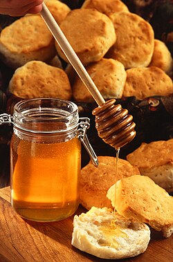
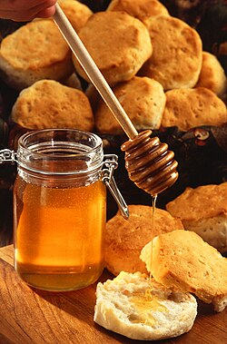
- 糖浆是一种粘稠的液体，主要由糖和水组成。糖浆广泛用于食品加工，包括饮料、硬糖、冰淇淋和果酱等。[ 103 ]
- 糖蜜和糖浆是从甘蔗或甜菜汁中去除糖分后获得的，是制糖过程中的副产品。它们可以与上述糖浆混合以增强甜度，并用于各种烘焙食品和糖果，包括太妃糖和甘草糖。[ 103 ]
- 在酿酒过程中，水果中的糖分会通过发酵过程转化为酒精。如果压榨水果后产生的葡萄汁含糖量较低，可以添加额外的糖来提高葡萄酒的酒精含量，这一过程称为加糖。在甜葡萄酒的生产过程中，发酵可以在未完成之前停止，留下一些残糖，使葡萄酒具有甜味。[ 105 ]
其他甜味剂
编辑消耗
编辑全球范围内，糖提供了每日所需热量的10%（基于2000千卡的膳食）。[ 108 ] 1750年，英国人平均每天从糖中摄取72卡路里。1913年，这一数字上升到395卡路里。2015年，糖仍然提供了英国人饮食中约14%的卡路里。[ 109 ]据一份数据统计，2016年人均糖消费量最高的是美国，其次是德国和荷兰。[ 110 ]
营养和风味
编辑| 每100克（3.5盎司）的营养价值 | |||||||||||||||||||||||||||||||||||||
|---|---|---|---|---|---|---|---|---|---|---|---|---|---|---|---|---|---|---|---|---|---|---|---|---|---|---|---|---|---|---|---|---|---|---|---|---|---|
| 活力 | 1,576 千焦（377 千卡） | ||||||||||||||||||||||||||||||||||||
|
97.33克
|
|||||||||||||||||||||||||||||||||||||
| 糖 | 96.21克 | ||||||||||||||||||||||||||||||||||||
| 膳食纤维 | 0克 | ||||||||||||||||||||||||||||||||||||
|
0克
|
|||||||||||||||||||||||||||||||||||||
|
0克
|
|||||||||||||||||||||||||||||||||||||
|
|||||||||||||||||||||||||||||||||||||
| 其他成分 | 数量 | ||||||||||||||||||||||||||||||||||||
| 水 | 1.77克 | ||||||||||||||||||||||||||||||||||||
|
|
|||||||||||||||||||||||||||||||||||||
| †百分比是根据美国成年人的推荐量估算的[ 111 ] ，钾除外，钾的摄入量是根据美国国家科学院的专家建议估算的[ 112 ] | |||||||||||||||||||||||||||||||||||||
| 每100克（3.5盎司）的营养价值 | |||||||||||||||||||||
|---|---|---|---|---|---|---|---|---|---|---|---|---|---|---|---|---|---|---|---|---|---|
| 活力 | 1,619 千焦（387 千卡） | ||||||||||||||||||||
|
99.98克
|
|||||||||||||||||||||
| 糖 | 99.91克 | ||||||||||||||||||||
| 膳食纤维 | 0克 | ||||||||||||||||||||
|
0克
|
|||||||||||||||||||||
|
0克
|
|||||||||||||||||||||
|
|||||||||||||||||||||
| 其他成分 | 数量 | ||||||||||||||||||||
| 水 | 0.03克 | ||||||||||||||||||||
|
|
|||||||||||||||||||||
| †百分比是根据美国成年人的推荐量估算的[ 111 ] ，钾除外，钾的摄入量是根据美国国家科学院的专家建议估算的[ 112 ] | |||||||||||||||||||||
红砂糖和白砂糖分别含有97%至接近100%的碳水化合物，水分含量低于2%，不含膳食纤维、蛋白质或脂肪（见表格）。红糖含有适量的铁（100克红糖中含有15%的每日参考摄入量，见表格），但一份典型的4克（一茶匙）红糖仅提供15卡路里热量，而铁或其他营养素的含量却微乎其微。[ 113 ]由于红糖在加工过程中会重新加入5%至10%的糖蜜，因此对一些消费者来说，它的价值在于比白糖更浓郁的风味。[ 114 ]
健康影响
编辑一般的
编辑高糖摄入对人体健康的损害大于其提供的营养益处，尤其与心脏代谢健康损害的风险有关。[ 3 ]
糖业资金和健康信息
编辑糖精炼商以及含糖食品和饮料制造商一直试图影响医学研究和公共卫生建议[ 115 ] [ 116 ]，据记录，从 20 世纪 60 年代到 2016 年，他们投入了大量资金，且大部分是秘密支出。[ 117 ] [ 118 ] [ 119 ] [ 120 ]关于含糖食品和饮料对健康影响的研究结果差异很大，这取决于研究人员是否与食品和饮料行业有经济联系。[ 121 ] [ 122 ] [ 123 ] 2013 年的一项医学评论得出结论：“不健康的商品行业不应参与国家或国际 NCD [非传染性疾病] 政策的制定”。[ 124 ]大众媒体（包括新闻媒体和社交媒体）也在努力引导与糖相关的健康信息的报道。[ 125 ] [ 126 ] [ 127 ]
肥胖和代谢综合征
编辑世界卫生组织(WHO) 2003 年的一份技术报告提供的证据表明，大量摄入含糖饮料（包括果汁）会增加总能量摄入，从而增加肥胖的风险。[ 128 ]糖本身是否是导致肥胖和代谢综合征的因素尚不确定。[ 129 ]荟萃分析显示，过量饮用含糖饮料会增加成人和儿童患2 型糖尿病和代谢综合征（包括体重增加[ 130 ]和肥胖）的风险。 [ 131 ] [ 132 ]
癌症
编辑糖的摄入不会直接导致癌症。[ 133 ] [ 134 ] [ 135 ] 澳大利亚癌症委员会表示，“没有证据表明摄入糖会使癌细胞生长更快或导致癌症”。[ 133 ]糖的摄入与肥胖相关癌症之间存在间接关系，因为它会增加体重过重的风险。[ 135 ] [ 133 ] [ 136 ]
美国癌症研究所和世界癌症研究基金会建议人们限制糖的摄入量。[ 137 ] [ 138 ]
有一种普遍的误解，认为可以通过减少糖和碳水化合物的摄入来“饿死”肿瘤，从而治疗癌症。事实上，保持健康饮食才是癌症患者健康的最佳方式。[ 139 ]
认识
编辑尽管一些研究表明糖的摄入会导致多动症，但证据质量较低[ 140 ]，科学界普遍认为儿童“糖分冲击”的说法纯属无稽之谈。[ 141 ] [ 142 ] 2019 年的一项荟萃分析发现，糖的摄入不会改善情绪，反而会降低警觉性，并在摄入后一小时内增加疲劳感。[ 143 ]一项关于儿童饮用大量能量饮料的低质量研究的回顾显示，能量饮料与不健康行为（包括吸烟和过量饮酒）的发生率较高以及多动症和失眠有关，尽管这些影响不能具体归因于糖，而不是饮料中的其他成分，如咖啡因。[ 144 ]
蛀牙
编辑世界卫生组织、糖行动组织和营养科学咨询委员会 (SACN) 认为，游离糖是导致龋齿的重要饮食因素。[ 145 ] [ 146 ] [ 147 ]世界卫生组织指出，“避免食用膳食游离糖可以预防龋齿”。[ 145 ]
一项人类研究回顾表明，当糖摄入量低于总能量消耗的 10% 时，龋齿的发病率较低。[ 148 ] 含糖饮料的摄入会增加蛀牙的风险。[ 149 ]
营养置换
编辑“空热量”论证认为，富含添加糖（或“游离糖”）的饮食会减少富含必需营养素的食物的摄入。[ 150 ]如果糖占每日能量摄入的25%以上，就会出现这种营养素替代现象，[ 151 ]这一比例与饮食质量差和肥胖风险相关。[ 152 ]即使摄入量较低，也可能出现营养素替代现象。[ 151 ]
建议膳食摄入量
编辑世 卫组织建议成人和儿童均应将游离糖摄入量减少至总能量摄入量的 10% 以下。“游离糖”包括添加到食品中的单糖和双糖，以及果汁和浓缩汁、蜂蜜和糖浆中的糖。世卫组织表示：“这些建议是基于对游离糖摄入量与体重（低质量和中 等质量证据）以及龋齿（极低质量和中等质量证据）之间关系的所有现有证据的审查。” [ 2 ]
2016年5月20日，美国食品药品监督管理局宣 布，所有食品上营养成分表（Nutrition Facts panel）的修订将于2018年7月生效。修订内容包括要求所有食品的营养成分表必须按重量和占每日摄入量（DV）的百分比列出“添加糖”。对于维生素 和矿物质，DV旨在指示应摄入的量。对于添加糖，指导原则是不应超过100% DV。100% DV定义为50克。对于每日摄入2000卡路里的人来说，50克相当于200卡路里，因此占总卡路里的10%——这与世界卫生组织的指导原则相同。[ 153 ]举例来说，大多数12美制液盎司（355毫升）罐装汽水含有39克糖。美国政府 2013-2014 年的一项食品消费调查显示，20 岁及以上的男性和女性的平均总糖摄入量（包括食物中天然存在的糖和添加的糖）分别为每天 125 克和 99 克。[ 154 ]
测量
编辑由于颗粒大小和水分含量不同，各种食用糖的密度也不同。《粉末与散装》杂志上的“工程资源 - 堆积密度图表”给出了各种堆积密度的数值：[ 155 ]
- 甜菜糖 0.80 克/毫升
- 葡萄糖 0.62 克/毫升 ( = 620 千克/立方米)
- 砂糖 0.70 克/毫升
- 糖粉 0.56 克/毫升
社会与文化
编辑20 世纪 60 年代和 70 年代，软饮料和糖果等含糖产品制造商以及糖业研究基金会被指控试图影响消费者和医学协会，方式是让人们怀疑过量摄入蔗糖的潜在健康危害，同时宣传饱和脂肪是心血管疾病的主要饮食风险因素。[ 117 ] 2016 年，这些批评促使人们建议饮食政策制定者强调需要开展高质量的研究，以考虑心血管疾病发展的多种生物标志物。 [ 117 ]
最初，没有糖是白色的；人类学家西德尼·明茨写道，白色很可能是在那些将白色与纯洁联系在一起的群体将他们的价值转移到糖上之后，才被理解为理想的颜色。[ 156 ]在印度，糖经常出现在宗教仪式中。为了表示仪式上的纯洁，这种糖不能是白色的。[ 156 ]
画廊
编辑-
红糖晶体
-
整颗枣糖
-
真空干燥的全蔗糖（棕色）
-
未精制、未漂白的糖原晶体
 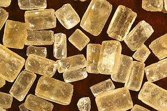
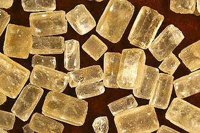 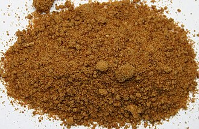
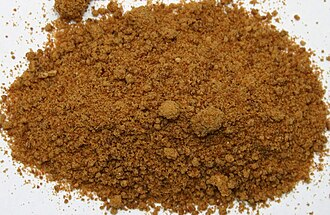 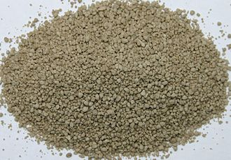
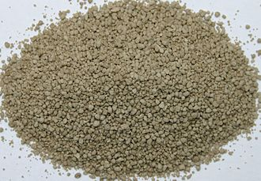 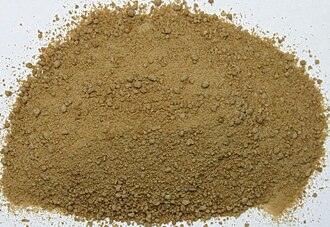
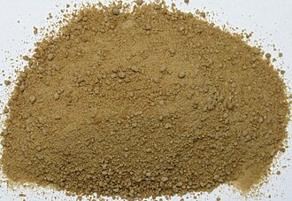 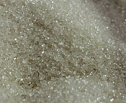
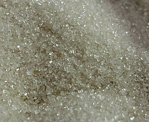{kind=link}
参见
编辑参考
编辑- ^ “经合组织-粮农组织农业展望 2020-2029——糖” (PDF)。联合国粮食及农业组织。2019 年。原件存档 (PDF)于 2021 年 4 月 17 日。检索日期：2021 年2 月 15 日。
- ^ a b跳转至： “指南：成人和儿童糖摄入量” （PDF）。日内瓦：世界卫生组织。2015年，第4页。 （原文存档(PDF)于2018年7月4日）。
- ^ a b跳转至： Huang Y, Chen Z, Chen B, Li J, Yuan X等人（2023 年 4 月）。“膳食糖摄入与健康：总体综述”。BMJ。381 ：e071609。doi ：10.1136 /bmj - 2022-071609。PMC 10074550。PMID 37019448。
- ^ 哈珀，道格拉斯。“糖”。在线词源词典。
- ^ “Jaggery” 。牛津词典。原版存档于2012年10月1日。2012年8月17日检索。
- ^ a b c跳转至： Roy Moxham (2002年2月7日)。《印度的巨大障碍：寻找分裂一个民族的活屏障》。Basic Books出版社。ISBN： 978-0-7867-0976-2。
- ^ Gordon, Stewart（2008）。《当亚洲是世界》。Da Capo出版社。第12页。ISBN 978-0-306-81556-0。
- ^ Eteraf-Oskouei, Tahereh；Najafi, Moslem (2013年6月)。“天然蜂蜜在人类疾病中的传统与现代用途：综述”。《伊朗基础医学杂志》。16 (6): 731–742。PMC 3758027。PMID 23997898。
- ^ 《剑桥世界食品史》。剑桥大学出版社。2000年。第1162页。ISBN 9780521402156。原件存档于 2023 年 4 月 15 日。检索日期：2023 年3 月 19 日。
- ^ 东南亚：从吴哥窟到东帝汶的历史百科全书。ABC-CLIO出版社。2004年，第1257页。ISBN 9781576077702。原件存档于 2023 年 5 月 5 日。检索日期：2023 年3 月 19 日。
- ^ 烹饪史：包含菜单和食谱的全球美食百科全书。ABC-CLIO。2020年12月2日，第645页。ISBN 9781610694568。原件存档于 2023 年 4 月 15 日。检索日期：2023 年3 月 19 日。
- ^ a b跳转至： Kiple, Kenneth F. 和 Kriemhild Conee Ornelas。世界食物史——糖。剑桥大学出版社。原著存档于 2012 年 1 月 23 日。2012年1 月 9 日检索。
- ^ Sharpe, Peter (1998)。《甘蔗：过去与现在》。伊利诺伊：南伊利诺伊大学。原著存档于2011年7月10日。
- ^ a b跳转至： Rolph, George (1873).关于糖：它的历史、生长、生产和分销。旧金山：JJ Newbegin。
- ^ Murthy，KR Srikantha (2016)。Bhavaprakāsa of Bhavamiśra，卷。我。 Krishnadas Ayurveda 系列 45（重印 2016 年版）。乔坎巴·克里希纳达斯学院，瓦拉纳西。第490–494页 。ISBN 978-81-218-0000-6。
- ^ “糖的历史——从早期甘蔗种植开始”。www.sugarhistory.net 。检索日期：2025年2月27日。
- ^ 引自迪奥斯科里德斯（Dioscorides）所著《本草纲目》第二卷。该书可通过维基百科迪奥斯科里德斯页面的链接下载。
- ^ 药物学。
- ^ “甘蔗：Saccharum Officinarum” （PDF）。美国国际开发署，美国政府。2006年，第7.1页。 （原文存档于2013年11月6日，PDF版本）
- ^ Adas, Michael (2001).古代和古典历史中的农业和畜牧社会。费城：天普大学出版社。第311页。ISBN 1-56639-832-0。
- ^ Kieschnick, John (2003年4月6日)。佛教对中国物质文化的影响。普林斯顿：普林斯顿大学出版社。ISBN 0-691-09676-7。
- ^ Sen, Tansen (2003年1月1日)。佛教、外交与贸易：中印关系的重新调整，600-1400年。檀香山（TH）：夏威夷大学出版社。第 38-40页。ISBN 0-8248-2593-4。
- ^ Kieschnick, John (2003年4月6日)。佛教对中国物质文化的影响。普林斯顿：普林斯顿大学出版社。第258页。ISBN 0-691-09676-7。
- ^ Jean Meyer，《Histoire du sucre》，编辑。德容基埃，1989
- ^ 《亚历山大远征记》，EJ Chinnock 译（1893 年）
- ^ Faas, P.；Whiteside, S. (2005)。《罗马餐桌：古罗马的饮食与盛宴》。芝加哥大学出版社，第149页。ISBN： 978-0-226-23347-5。
- ^ Ponting, Clive (2000)。世界历史：一个新的视角。伦敦：Chatto & Windus出版社。第481页。ISBN 978-0-7011-6834-6。
- ^ Barber, Malcolm (2004).两座城市：中世纪欧洲，1050–1320（第二版）。劳特利奇出版社。第14页。ISBN 978-0-415-17415-2。
- ^ Strong，195页
- ^ a b跳转至： Manning, Patrick (2006). “1450-1930 年西非的奴隶制与奴隶贸易”。西非历史主题。Akyeampong, Emmanuel Kwaku。雅典：俄亥俄大学。 第102-103页。ISBN 978-0-8214-4566-2. OCLC 745696019。
- ^ Strong，194页
- ^ Frankopan，200。“到哥伦布启航时，仅马德拉岛每年就生产超过300万磅重的糖——尽管这是以一位学者所描述的早期现代‘生态灭绝’为代价的，因为森林被砍伐，兔子和老鼠等非本地动物物种大量繁殖，以至于它们被视为一种神圣的惩罚。”
- ^ Strong，194–195，195页引用
- ^ Strong，75岁
- ^ Strong，133–134，195–197页
- ^ Strong，309
- ^ Abreu y Galindo, J. de (1977)。 A.乔拉内斯库（编）。加那利群岛征服史。特内里费岛：戈雅的作品。
- ^ 安东尼奥·贝尼特斯·罗霍 (1996)。重复：加勒比海和后现代视角。詹姆斯·E·马拉尼斯（James E. Maraniss）（译）。杜克大学出版社。 p。 93.国际标准书号 0-8223-1865-2。
- ^ 伊娜·巴格迪安兹·麦凯布 (2014)。1500-1800 年全球消费史。泰勒和弗朗西斯. p。 59.国际标准书号 9781317652656。
- ^ “甜菜糖的起源”。EUFIC 。 2001年7月3日。原件存档于2020年8月1日。 2020年3月29日检索。
- ^ 马格拉夫 (1747)。“Experiences chimiques faites dans le dessein de tir un veritable sucre deodiversitys plantes, qui croissent dans nos contrées”[旨在从我们土地上生长的各种植物中提取真正糖分的化学实验]。柏林皇家科学与文学学院历史（法语）。第79–90页 。原始存档于2022年12月31日。
- ^ 阿查德（1799）。“Procédé d'extraction du sucre de bette” [从甜菜中提取糖的工艺]。化学年鉴。卷。 32. pp. 163–168 .原始存档于2022年10月22日。
- ^ 沃尔夫，G. (1953)。 “弗朗兹·卡尔·阿查德，1753-1821 年；糖文化史的贡献”。医学月刊。7 ( 4 ): 253–4。PMID 13086516。
- ^ “Festveranstaltung zum 100jährigen Bestehen des Berliner Institut für Zuckerindustrie”。柏林工业大学。 2004年11月23日.原始存档于2007年8月24日.检索日期：2020 年3 月 29 日。
- ^ 拉鲁斯美食.拉鲁斯版本。 2009 年 10 月 13 日。 1152.国际标准书号 9780600620426。
- ^ 安德烈亚斯·西吉斯蒙德·马格拉夫 | 德国化学家。大英百科全书。原著存档于 2020 年 3 月 29 日。检索日期：2020 年3 月 29 日。
- ^ a b跳转至： Mintz, Sidney (1986).甜蜜与力量：糖在现代历史中的地位。企鹅出版社。ISBN 978-0-14-009233-2。
- ^ Otter, Chris (2020)。大行星饮食。美国：芝加哥大学出版社。第73页。ISBN 978-0-226-69710-9。
- ^ “强迫劳动”。英国政府国家档案馆。2010 年。原件存档于 2016 年 12 月 4 日。2012年2 月 1 日检索。
- ^ Lai, Walton (1993)。契约劳工，加勒比糖业：1838-1918 年中国和印度移民至英属西印度群岛。约翰·霍普金斯大学出版社。ISBN ： 978-0-8018-7746-9。
- ^ Vertovik, Steven；（Robin Cohen 编）（1995 年）。《剑桥世界移民调查》。剑桥大学出版社，第 57-68页。ISBN 978-0-521-44405-7。
- ^ Laurence, K (1994).劳工问题：1875-1917年契约移民进入特立尼达和英属圭亚那。圣马丁出版社。ISBN ： 978-0-312-12172-3。
- ^ “圣卢西亚印第安人抵达日”。重复岛屿。加勒比重复岛屿。2009 年。原件存档于 2017 年 4 月 24 日。2012年2 月 1 日检索。
- ^ “印度契约劳工”。英国政府国家档案馆。2010 年。原件存档于 2011 年 12 月 12 日。2012年2 月 1 日检索。
- ^ “比哈尔邦早期的制糖业——Bihargatha” 。Bihargatha.in。原著存档于2011年9月10日。 2012年1月7日检索。
- ^ 比较： Bosma, Ulbe (2013).印度和印度尼西亚的糖料种植园：1770-2010年的工业生产。比较世界史研究。剑桥大学出版社。ISBN 978-1-107-43530-8. 2018 年9 月 3 日检索。
- ^ “糖的制作方法——历史”。SKIL ：国际糖知识组织。原著存档于2002年10月20日。 2012年3月28日检索。
- ^ “参观泰特莱尔档案馆”。Sugar Girls 博客。2012 年 3 月 10 日。原件存档于 2012 年 7 月 30 日。2012年3 月 11 日检索。
- ^ “Dačice” .梅斯托·达西采。原始存档于2021年9月2日。检索日期：2021 年9 月 2 日。
- ^ Barrett, Duncan; Calvi, Nuala (2012). 《糖女孩》。柯林斯出版社， 第ix页。ISBN 978-0-00-744847-0。
- ^ Otter, Chris (2020)。大行星饮食。美国：芝加哥大学出版社。第96页。ISBN 978-0-226-69710-9。
- ^ a b跳转至： Hicks, Jesse (2010 年春季)。《甜蜜的追求》。科学史研究所。原著存档于 2018 年 11 月 5 日。检索日期： 2018 年10 月 28 日。
- ^ “1953年：英国结束糖果配给制”。英国广播公司（BBC）。1953年2月5日。原件存档于2007年12月25日。 2018年10月28日检索。
- ^ Nilsson, Jeff (2017年5月5日)。“你能忍受75年前美国的战时糖配给吗？” 《星期六晚邮报》。原著存档于2018年10月29日。检索日期：2018年10月28日。
- ^ Lee, K. (1946)。《糖供应》。CQ出版社。原著存档于2018年10月29日。检索日期：2018年10月28日。
- ^ “第二次世界大战期间的食品和衣物配给”。澳大利亚战争纪念馆。2017年10月25日。原著存档于2018年10月29日。 2018年10月28日检索。
- ^ Ur-Rehman, S; Mushtaq, Z; Zahoor, T; Jamil, A; Murtaza, MA (2015)。“木糖醇：生物生产、应用、健康益处及相关安全问题的综述”。《食品科学与营养评论》。55 ( 11 ): 1514–28。doi : 10.1080/10408398.2012.702288。PMID 24915309。S2CID 20359589。
- ^ a b c跳转至： 猪人，沃德；霍顿，D.（1972）。猪侠和霍顿（编辑）。碳水化合物：化学和生物化学第 1A 卷（第 2 版）。圣地亚哥：学术出版社。第1–67页 。ISBN 978-0-12-556352-9。
- ^ Joshi, S; Agte, V (1995)。“素食男性膳食纤维成分的消化率”。《植物性食物与人类营养》（荷兰多德雷赫特）。48 ( 1 ) : 39–44。doi : 10.1007/ BF01089198。PMID 8719737。S2CID 25995873。
- ^ 《默克索引：化学品、药物和生物制品百科全书》（第11版）。默克公司。1989年。ISBN 091191028X。，8205。
- ^ Edwards, William P. (2015年11月9日)。《糖果的科学》。皇家化学学会。第120页。ISBN 978-1-78262-609-1。
- ^ CSB 发布新的安全视频“地狱：帝国糖业的粉尘爆炸” "。美国化学安全和危害调查委员会。华盛顿特区，2009 年 10 月 7 日。原著存档于 2020 年 4 月 24 日。2021年5 月 17 日检索。
- ^ Woo, KS; Kim, HY; Hwang , IG; Lee, SH; Jeong, HS (2015)。“葡萄糖和麦芽糖溶液热降解的特性”。营养食品科学。20 ( 2 ): 102–9。doi : 10.3746/ pnf.2015.20.2.102。PMC 4500512。PMID 26175997。
- ^ a b c d跳转至： Buss, David；Robertson, Jean (1976). 《营养手册》；英国农业、渔业及食品部。伦敦：女王陛下文具办公室。第 5-9页。
- ^ Kretchmer, Norman; Claire B. Hollenbeck (1991).糖和甜味剂. CRC Press, Inc. ISBN 978-0-8493-8835-4。
- ^ Raven, Peter H. & George B. Johnson (1995)。Carol J. Mills (编)。《理解生物学》（第三版）。WM C. Brown著。第203页。ISBN 978-0-697-22213-8。
- ^ Teller, George L. (1918年1月)。“除甘蔗或甜菜以外的糖”。《美国食品杂志》：23–24页。原版存档于2023年4月15日。检索日期：2023年3月19日。
- ^ Schenck, Fred W. “葡萄糖和含葡萄糖糖浆”。乌尔曼工业化学百科全书。Weinheim: Wiley-VCH。doi : 10.1002/ 14356007.a12_457.pub2。ISBN 978-3-527-30673-2。
- ^ “联邦法规第21条”。AccessData ，美国食品药品监督管理局。原件存档于2020年9月6日。检索日期：2020年9月12日。
- ^ Ireland, Robert (2010年3月25日)。《牙科词典》。牛津大学出版社。ISBN 978-0-19-158502-9。
- ^ 乳糖酶，载于《大英百科全书》
- ^ 麦芽糖酶，载于《大英百科全书》
- ^ 蔗糖酶，载于《大英百科全书》
- ^ 使用指向 FoodData Central (USDA) 的链接，然后搜索特定食品，并点击“SR Legacy Foods”。
- ^ a b跳转至： “糖：世界市场与贸易” （PDF）。美国农业部外国农业服务局。2017年11月。原件存档(PDF)于2018年11月23日。 2018年5月20日检索。
- ^ Eastick, Ben (2024年4月4日)。“2024年4月全球糖市场报告”。Ragus 。检索日期：2025年1月15日。
- ^ a b跳转至： “2022 年甜菜产量，作物/地区/世界清单/产量/年份（精选清单）”。联合国粮食及农业组织，综合统计数据库 (FAOSTAT)。2024 年。检索日期：2024 年6 月 10 日。
- ^ 世界粮食及农业——2023 年统计年鉴。粮食及农业组织。2023 年。doi ： 10.4060 / cc8166en。ISBN 978-92-5-138262-2。
- ^ 《世界粮食及农业——2021年统计年鉴》。粮食及农业组织。2021年。doi ： 10.4060 / cb4477en。ISBN 978-92-5-134332-6。S2CID 240163091。 原著存档于 2021年11 月 3 日。2021年12 月 13 日检索– 通过 www.fao.org。
- ^ a b c d跳转至： “蔗糖是如何制成的——基本故事”。国际糖业知识组织。原著存档于2018年9月22日。检索日期： 2018年9月24日。
- ^ Flynn, Kerry (2016年4月23日)。“报告称，2016年印度干旱可能导致2016-17年度糖产量下降29-35%”。国际商业时报。原版存档于2016年10月9日。检索日期：2016年10月27日。
- ^ “二年生甜菜” 。转基因指南针。原版存档于2014年2月2日。检索日期：2014年1月26日。
- ^ a b跳转至： “甜菜糖是如何制成的”。国际糖业知识。原著存档于2012年3月21日。检索日期：2012年3月22日。
- ^ “Tantangan Menghadapi Ketergantungan Impor Gula Rafinasi”（印度尼西亚语）。印度尼西亚阿索西亚西·古拉·拉菲纳西。原始存档于2014年4月13日。2014 年4 月 9 日检索。
- ^ “Rafinasi Vs Gula Kristal Putih”（印度尼西亚语）。罗盘格拉米迪亚。 2011年7月29日.原始存档于2014年4月13日. 2014 年4 月 9 日检索。
- ^ “糖的精炼和加工” （PDF）。美国糖业协会。原版（PDF）存档于2015年2月21日。检索日期：2014年4月16日。
- ^ 阿古斯·帕克帕汉；苏普里奥诺，阿古斯，编辑。 （2005）。 “Bagaimana Gula Dimurnikan – Proses Dasar”。Ketika Tebu Mulai Berbunga（印度尼西亚语）。茂物：糖观察家。国际标准书号 978-979-99311-0-8。
- ^ “糖是如何精炼的”。SKIL。原著存档于2012年3月22日。检索日期：2012年3月22日。
- ^ Deulgaonkar, Atul (2005年3月12日至25日)。“改革的案例”。前线。22 （8 ）。原著存档于2011年7月28日。
- ^ a b跳转至： 阿古斯·帕克帕汉；苏普里奥诺，阿古斯，编辑。 （2005）。 “Industri Rafinasi Kunci Pembuka Restrukturisasi Industri Gula Indonesia”。Ketika Tebu Mulai Berbunga（印度尼西亚语）。茂物：糖观察家。第70–72页 。ISBN 978-979-99311-0-8。
- ^ a b c跳转至： “糖的种类”。糖业协会。原件存档于 2020 年 1 月 6 日。检索日期：2019 年9 月 23 日。
- ^ “类型和用途”。英国糖营养学。原著存档于2012年8月5日。 2012年3月23日检索。
- ^ a b c d e f g跳转至： “糖的旅程”。英国糖业。原著存档于2011年3月26日。 2012年3月23日检索。
- ^ 大卫，伊丽莎白（1977）。英国面包和酵母烹饪法。企鹅图书。第139页。
- ^ Robinson, Jancis (2006). 《牛津葡萄酒指南》（第3版）。牛津大学出版社。第 665-66页。ISBN 978-0-19-860990-2。
- ^ Hofman, D. L; Van Buul , V. J; Brouns, F. J (2015)。 “可消化麦芽糊精的营养、健康和监管方面”。食品科学与营养评论。56 ( 12 ): 2091– 2100。doi : 10.1080/10408398.2014.940415。PMC 4940893。PMID 25674937。
- ^ 欧洲议会和理事会 (1990)。“关于食品营养标签的理事会指令”。1990年 9 月 24 日欧洲理事会关于食品营养标签的指令，第 4 页。原件存档于 2011 年 10 月 3 日。2011年9 月 28 日检索。
- ^ “食物平衡表”。联合国粮食及农业组织。2007年。原件存档于2016年10月9日。 2012年3月28日检索。
- ^ Otter, Chris (2020)。大行星饮食。美国：芝加哥大学出版社。第22页。ISBN 978-0-226-69710-9。
- ^ Amber Pariona (2017年4月25日)。“世界糖消费量最大的国家”。世界地图集。原版存档于2022年6月22日。检索日期：2018年5月20日。
- ^ a b跳转至： 美国食品药品监督管理局(2024)。“营养和补充剂成分标签上的每日摄入量”。FDA 。原件存档于 2024 年 3 月 27 日。检索日期：2024 年3 月 28 日。
- ^ a b跳转至： “表 4-7 本报告中确定的钾适量摄入量与 2005 年 DRI 报告中确定的钾适量摄入量的比较” . 第 120 页。 引自： Stallings, Virginia A.；Harrison, Meghan；Oria, Maria 编（2019）。“钾：膳食参考摄入量与充足性”。《钠和钾的膳食参考摄入量》。 第 101-124页。doi： 10.17226/ 25353。ISBN ： 10.17226/25353。 978-0-309-48834-1。PMID 30844154 。NCBI NBK545428。
- ^ “4克砂糖（蔗糖）（来自选择列表）”。康泰纳仕为美国农业部国家营养数据库（SR-21版）撰写。2014年。原件存档于2015年3月7日。 2017年5月13日检索。
- ^ O'Connor, Anahad (2007年6月12日)。“说法：红糖比白糖更健康”。《纽约时报》。原著存档于2017年5月13日。检索日期：2017年5月13日。
- ^ Mozaffarian, Dariush ( 2017年5月2日) 。 “利益冲突与食品工业在营养研究中的作用”。JAMA。317 ( 17 ) : 1755–56。doi : 10.1001/ jama.2017.3456。ISSN 0098-7484。PMID 28464165。
- ^ Anderson, P.；Miller, D. (2015年2月11日)。“评论：甜蜜政策” （ PDF ）。BMJ。350 ( feb10-16 ): 780–h780。doi : 10.1136 / bmj.h780。ISSN 1756-1833。PMID 25672619。S2CID 34501758。
- ^ a b c跳转至： Kearns, CE; Schmidt, L. A; Glantz, S. A (2016)。 “糖业与冠心病研究：内部行业文献的历史分析” 。《美国医学会杂志·内科学分会》。176 ( 11): 1680–85。doi : 10.1001/ jamainternmed.2016.5394。PMC 5099084。PMID 27617709。
- ^ Kearns, Cristin E.；Glantz, Stanton A.；Schmidt, Laura A. (2015年3月10日)。“糖业对美国国家牙科研究所1971年国家龋齿计划科学议程的影响：内部文件的历史分析” 。PLOS Medicine。12 ( 3 )。Simon Capewell （编辑）：1001798。doi ：10.1371/journal.pmed.1001798。ISSN 1549-1676。PMC 4355299。PMID 25756179。
- ^ Flint, Stuart W. (2016 年 8 月 1 日)。“我们在出卖灵魂吗？学术会议上出现与健康问题相关的品牌的新现象”。《社区流行病学杂志》。70 (8): 739–40。doi : 10.1136 /jech-2015-206586。ISSN 0143-005X。PMID 27009056。S2CID 35094445。原著存档于 2018年6 月 3 日。检索日期： 2018年3月25日。 （第二期 ISSN 1470-2738）
- ^ Aaron, Daniel G. ； Siegel, Michael B. (2017年1 月)。“两大汽水公司赞助国家卫生组织”。《美国预防医学杂志》。52 (1): 20–30。doi : 10.1016/j.amepre.2016.08.010。ISSN 0749-3797。PMID 27745783。
- ^ Schillinger, Dean; Tran, Jessica; Mangurian, Christina; Kearns, Cristin (2016 年 12 月 20 日)。“含糖饮料会导致肥胖和糖尿病吗？产业与科学争议的制造” ( PDF ) 。内科医学年鉴。165 (12): 895–97。doi : 10.7326 /L16-0534。ISSN 0003-4819。PMC 7883900。PMID 27802504。S2CID 207537905。原件存档 (PDF) 于 2018 年 9 月 3日。检索日期：2018年3月21日。 （原始网址，付费墙 存档于 2022 年 12 月 31 日在Wayback Machine：作者的利益冲突披露表 存档于 2018 年 9 月 3 日在Wayback Machine）
- ^ Bes-Rastrollo, Maira；Schulze, Matthias B.；Ruiz-Canela, Miguel；Martinez-Gonzalez, Miguel A. (2013)。“含糖饮料与体重增加之间关联的经济利益冲突和报告偏差：系统评价的系统评价” 。PLOS Medicine。10 ( 12 ) : 1001578。doi : 10.1371/ journal.pmed.1001578。PMC 3876974。PMID 24391479。
- ^ O'Connor, Anahad (2016年10月31日)。“与汽水行业相关的研究掩盖了健康风险”。《纽约时报》。ISSN 0362-4331。原著存档于2018年3月21日。检索日期：2018年3月23日。
- ^ Moodie, Rob；Stuckler, David；Monteiro, Carlos；Sheron, Nick；Neal, Bruce；Thamarangsi, Thaksaphon；Lincoln, Paul；Casswell, Sally (2013年2月23日)。“利润与流行病：预防烟草、酒精和超加工食品及饮料行业的有害影响”。《柳叶刀》。381 ( 9867 ) : 670–79。doi : 10.1016 /S0140-6736(12 ) 62089-3。ISSN 0140-6736。PMID 23410611。S2CID 844739。
- ^ O'Connor, Anahad (2015年8月9日)。“可口可乐资助那些将肥胖问题归咎于不良饮食的科学家”。原文存档于2022年6月25日。检索日期： 2018年3月24日。
- ^ Lipton, Eric (2014 年 2 月 11 日)。“竞争对手甜言蜜语地欺骗公众”。《纽约时报》。ISSN 0362-4331。原著存档于 2018 年 3 月 22 日。检索日期：2018年3 月 23 日。
- ^ Sifferlin, Alexandra (2016年10月10日)。“汽水公司资助美国96个健康组织”《时代》杂志。检索日期： 2018年3月24日。
- ^ 世界卫生组织/粮农组织联合专家磋商会（2003年）。“世界卫生组织技术报告系列916：饮食、营养和慢性病预防” （PDF）。原件存档于2016年6月25日（PDF）。检索日期：2013年12月25日。
- ^ Stanhope, Kimber L. (2012)。“含果糖在肥胖和代谢综合征流行中的作用”。《医学年度评论》。63 (1 ) : 329–343。doi : 10.1146/annurev-med-042010-113026。PMID 22034869。糖在肥胖和代谢综合征流行中
的作用存在争议。
- ^ Hill, JO; Prentice , AM (1995年7月1日)。“糖与体重调节”。《美国临床营养学杂志》。62 ( 1 ): 264S – 273S。doi : 10.1093/ajcn/62.1.264S。PMID 7598083。
- ^ Malik, VS; Popkin, BM; Bray, GA; Despres, J.-P.; Willett, WC; Hu, FB (2010)。“含糖饮料与代谢综合征和 2型糖尿病风险：一项荟萃分析”。糖尿病护理。33 (11): 2477–83。doi : 10.2337/ dc10-1079。PMC 2963518。PMID 20693348。
- ^ Malik, Vasanti S.；Pan, An；Willett, Walter C.；Hu, Frank B.（2013年10月1日）。“含糖饮料与儿童及成人体重增加：系统评价与荟萃分析” 。《美国临床营养学杂志》。98 (4): 1084– 1102。doi : 10.3945/ajcn.113.058362。ISSN 0002-9165。PMC 3778861。PMID 23966427。
- ^ a b c跳转至： “糖会致癌吗？”。澳大利亚癌症委员会。2021 年。原版存档于 2024 年 3 月 28 日。
- ^ “糖会致癌吗？”。美国临床肿瘤学会。2021 年。原版存档于 2023 年 10 月 1 日。
- ^ a b跳转至： “糖和癌症——你需要知道的”。英国癌症研究中心。2023 年。原件存档于 2024 年 1 月 6 日。
- ^ “糖和癌症的关系”。美国癌症研究所。2016年。原件存档于2024年1月20日。
- ^ “抑制全球糖消费” (PDF)。世界癌症研究基金会国际分会。2015年。原件存档日期(PDF)于2024年3月29日。
- ^ Clinton SK, Giovannucci EL, Hursting SD (2020)。“世界癌症研究基金会/美国癌症研究所关于饮食、营养、体力活动和癌症的第三次专家报告：影响和未来方向” 。《营养学杂志》。150 (4): 663– 671。doi : 10.1093 /jn/ nxz268。PMC 7317613。PMID 31758189。
- ^ Grimes DR, O'Riordan E (2023 年11月)。“饥饿致癌及其他危险的饮食误区”。《柳叶刀肿瘤学》24 (11): 1177– 1178。doi : 10.1016/S1470-2045(23) 00483-7。PMID 37922928。
- ^ Del-Ponte, Bianca；Quinte, Gabriela Callo；Cruz, Suélen；Grellert, Merlen；Santos, Iná S. (2019)。“饮食模式与注意力缺陷多动障碍 (ADHD)：系统评价与荟萃分析”。《情感障碍杂志》。252 ：160–173。doi ：10.1016/j.jad.2019.04.061。hdl ： 10923 /18896。PMID 30986731。
- ^ Mantantzis, Konstantinos；Schlaghecken, Friederike；Sünram-Lea, Sandra I.；Maylor, Elizabeth A. (2019年6月1日)。“糖分飙升还是糖分骤降？碳水化合物对情绪影响的荟萃分析”。《神经科学与生物行为评论》 。101 ：45–67。doi：10.1016/j.neubiorev.2019.03.016。ISSN 0149-7634。PMID 30951762。
- ^ Wolraich , Mark L. ( 1995年11月22日)。 “糖对儿童行为或认知的影响：一项荟萃分析”。JAMA。274 (20): 1617–1621。doi : 10.1001 / jama.1995.03530200053037。ISSN 0098-7484。PMID 7474248。
- ^ Mantantzis, Konstantinos；Schlaghecken, Friederike；Sünram-Lea, Sandra I.；Maylor, Elizabeth A. (2019 年 6 月 1 日)。“糖分飙升还是糖分骤降？碳水化合物对情绪影响的荟萃分析” ( PDF)。神经科学与生物行为评论。101 ：45–67。doi：10.1016/j.neubiorev.2019.03.016。PMID 30951762。S2CID 92575160。原件存档(PDF)于 2020 年 5 月 6 日。检索日期：2020年4月30日。
- ^ Visram, Shelina；Cheetham, Mandy；Riby, Deborah M；Crossley, Stephen J；Lake, Amelia A (2016年10月1日)。“儿童和青少年的能量饮料消费：一项关于身体影响和消费者态度证据的快速回顾” 。BMJ Open。6 ( 10 ) : e010380。doi : 10.1136 / bmjopen- 2015-010380。ISSN 2044-6055。PMC 5073652。PMID 27855083 。
- ^ a b跳转至： “糖和龋齿”。世界卫生组织。2017 年。原件存档于 2024 年 8 月 11 日。
- ^ “糖和蛀牙”。糖行动。2019年。原件存档于2024年7月24日。
- ^ “SACN碳水化合物与健康报告”。英国公共卫生部。2015年。原件存档于2024年8月21日。
- ^ Moynihan, P. J; Kelly, S. A (2014)。“限制糖摄入对龋齿的影响：系统评价为世卫组织指南提供信息”。牙科研究杂志。93 ( 1 ): 8– 18。doi : 10.1177 / 0022034513508954。PMC 3872848。PMID 24323509 。
- ^ Valenzuela MJ、Waterhouse B、Aggarwal VR、Bloor K、Doran T (2021)。“含糖饮料对口腔健康的影响：系统评价与荟萃分析”。《欧洲公共卫生杂志》。31 (1): 122– 129。doi : 10.1093 /eurpub/ ckaa147。PMID 32830237。
- ^ Marriott BP，Olsho L，Hadden L，Connor P（2010）。“美国添加糖和特定营养素的摄入量，基于2003-2006年国家健康与营养检查调查（NHANES）”。《食品科学与营养评论》。50 ( 3): 228–58。doi : 10.1080/ 10408391003626223。PMID 20301013。S2CID 205689533。
- ^ a b跳转至： 宏量营养素小组；膳食纤维定义小组；营养素参考上限小组委员会；膳食参考摄入量解释和使用小组委员会；膳食参考摄入量科学评估常设委员会；食品与营养委员会；美国国家科学、工程和医学院医学研究所；美国国家研究委员会(2005)。能量、碳水化合物、纤维、脂肪、脂肪酸、胆固醇、蛋白质和氨基酸的膳食参考摄入量。华盛顿特区：美国国家科学院出版社。ISBN
978-0-309-08525-0。检索日期：2018 年12 月 4 日。
尽管没有足够的数据来设定添加糖的 UL [可耐受最高摄入量]，但建议将最大摄入量设定为能量的 25% 或更低，以防止取代作为必需微量营养素主要来源的食物。
- ^ 世界卫生组织（2015）。指南：成人和儿童糖摄入量（PDF）（报告）。日内瓦：世卫组织出版社。ISBN ： 978-92-4-154902-8。
- ^ 营养，食品安全与应用中心(2021年2月22日)。“标签与营养——营养成分标签的变更”。www.fda.gov 。原件存档于2014年11月1日。 2017年3月10日检索。
- ^ 我们在美国吃什么，NHANES 2013–2014于 2017 年 2 月 24 日 存档在Wayback Machine。
- ^ “工程资源——堆积密度图表”。粉末和散装。原件存档于2002年10月27日。
- ^ a b跳转至： Mintz, Sidney (2015)。“前言”。载于Goldstein, Darra主编的《牛津糖与甜食指南》。牛津大学出版社。ISBN为 978-0-19-931339-6。
来源
编辑
 本文内容源自免费内容作品。根据 CC BY-SA IGO 3.0（许可声明/许可）许可。文本摘自联合国粮农组织（FAO）出版的《世界粮食及农业——2023年统计年鉴》。
本文内容源自免费内容作品。根据 CC BY-SA IGO 3.0（许可声明/许可）许可。文本摘自联合国粮农组织（FAO）出版的《世界粮食及农业——2023年统计年鉴》。
进一步阅读
编辑- 巴雷特，邓肯；卡尔维，努阿拉（2012）。《糖女孩》。柯林斯出版社。ISBN ： 978-0-00-744847-0。
- Chisholm, Hugh编（1911）。。大英百科全书（第11版）。剑桥大学出版社。
- 弗兰科潘，彼得，《丝绸之路：一部新的世界史》，2016 年，布卢姆斯伯里出版社， ISBN 9781408839997
- Saulo, Aurora A. (2005年3月)。“食品中的糖和甜味剂” (PDF)。热带农业与人力资源学院。
- Strong, Roy (2002)，《盛宴：盛大饮食史》，Jonathan Cape 著， ISBN 0224061380